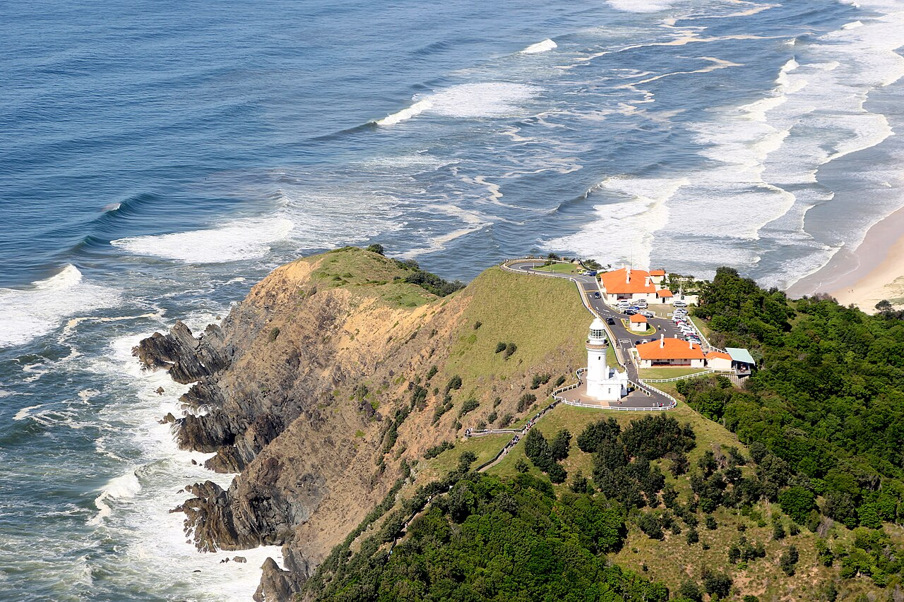

Byron Bay · 5-day family itinerary
Five days based in Byron Bay, flying into Ballina Byron Gateway, for a seven-year-old and a four-year-old. Built around a lifeguard roster: in late November only Main Beach has lifeguards, so the swims go on two weekdays and the lighthouse, rainforest and river days stay out of the surf.

Photo: AyanA123, Aerial view of Cape Byron Lighthouse, Cape Byron State Conservation Area, CC BY-SA 4.0, via Wikimedia Commons.

Checked before you commit
This illustrative route flies into Ballina Byron Gateway, stays five days in Byron Bay and flies home. NSW National Parks pages for Walgun Cape Byron State Conservation Area, the lighthouse, the walking track, Minyon Falls lookout, Brunswick Heads Nature Reserve and its North Head track, Byron Shire Council’s 2026–27 lifeguard roster, the ByronBay.com Main Beach guide and Visit NSW’s Byron Bay and Brunswick Heads pages were read on 9 November 2026. Nothing was booked.
One base and one airport run. Byron Bay Main Beach is a short walk from town, Cape Byron Lighthouse is 2 km east of the town centre, and Visit NSW says Ballina Byron Gateway Airport is 30 minutes from the centre. Two days leave town: Minyon Falls inland on Day 3 and Brunswick Heads on Day 4. We found no sourced drive time for either, so check a map.
One outing each morning and a quiet afternoon. The real effort is the Cape Byron walking track, a Grade 3, 3.7 km loop with short steep hills and many steps. NSW National Parks says it can be started at several points and walked in shorter sections, which is how a four-year-old does it.
We didn’t check accommodation, car hire or flight times. NSW National Parks charges A$10 per vehicle per hour at the lighthouse car park, with a one-hour limit per vehicle per day, and A$5 per hour at The Pass and the Bawaii rest area. A booking-hub link is intent only. It doesn’t hold a room or a seat.
Planning boundary: dates are illustrative; the worked example runs Monday 23 to Friday 27 November 2026. Byron Shire Council’s 2026–27 roster lists lifeguards at Byron Bay Main Beach all year, three lifeguards on five days a week from 9 am to 5 pm. It lists Clarkes Beach, The Pass, Wategos and Tallow Beach only from 18 December 2026 to 27 January 2027 and from 10 to 25 April 2027, so none of them is patrolled on these dates.
Visit NSW says Main, Clarkes and Wategos beaches are patrolled year-round, which disagrees with the Council roster. We followed the Council because it lists dates. NSW National Parks alerts were checked in a browser on 9 November 2026. Recheck them before setting out; an open status is not a guarantee of safe conditions or access when you travel. Alfred doesn’t check patrols, closures or fees. Book opens a partner checkout; it doesn’t prove a booking.
Route and family-coordination brief
Party: two adults, one seven-year-old and one four-year-old, flying from Melbourne. Base: five days in Byron Bay. Pace: moderate, a morning and an afternoon slot a day. Budget input: Mid Range. Assumption: a hire car; we didn’t check hire, parking at your accommodation or public transport.
Getting there: Visit NSW says you can fly into Ballina Byron Gateway Airport, 30 minutes from the centre of Byron Bay, with regular direct flights from Sydney and Melbourne. We didn’t check timetables or fares. Visit NSW also lists the Gold Coast Airport as about 30 minutes from Brunswick Heads, but gives no figure for Byron Bay, so we didn’t use it.
Swim rule: the Council roster has lifeguards at Main Beach from 9 am to 5 pm on each service day, and ByronBay.com says weekdays are staffed by the Australian Lifeguard Service and weekends and public holidays by Surf Life Saving volunteers. Swim only between the red and yellow flags. If there are no flags, ByronBay.com says you should not swim. NSW National Parks says the beaches in Brunswick Heads Nature Reserve are not patrolled and can have strong rips.
Park rule: Cape Byron, Nightcap and Brunswick Heads Nature Reserve all say no pets. Cape Byron and the Minyon Falls lookout also say no drones, and national parks are no-smoking areas. Minyon Falls and the North Head track have no drinking water, so bring your own. Mobile reception is limited at Cape Byron, Minyon Falls and Brunswick Heads Nature Reserve, which matters because you need reception to call 000.
On 9 November 2026, NSW National Parks displayed Minyon Falls lookout as open and Nightcap National Park as partly closed. Its alert says a section of Nightcap Range Road is closed for safety and access to Minyon Falls and Rummery Park campground is via Minyon Drive only. Closures remain until safety assessments and remedial works are complete; follow signage. The displayed 31 December end date is estimated, not a reopening promise. Cape Byron Lighthouse Café is closed until further notice while NSW National Parks assesses future options.
Left out: the Minyon Falls walking track (13 km return, Grade 3, remote), Julian Rocks snorkelling and diving, kayaking, surf lessons, horse riding, whale-watching cruises (Visit NSW gives July to September as the peak), night tours, markets other than the Thursday farmers market, and nightlife.
Day 1 — Fly in, Main Beach and Apex Park
Fly into Ballina Byron Gateway, which Visit NSW says is 30 minutes from the centre of Byron Bay, collect the hire car and check in. We haven’t checked flight times, so the plan keeps the day open until you land.
Walk or drive to Main Beach at the east end of Jonson Street, with Apex Park and its playground beside it. ByronBay.com lists toilets with baby change, showers, a drinking fountain, barbecues, picnic tables and a large grassy area. Check the car park signs for current charges and time limits.
The Council roster has Main Beach lifeguards from 9 am to 5 pm on each service day, and ByronBay.com says Monday to Friday is staffed. Swim only between the red and yellow flags, and only while they are up. This Monday and the Friday are the two swim days on this plan.
Fallback: if you land after the usual 9 am to 5 pm service hours, do not assume a patrol is operating. Stay on the sand and the playground and swim on Day 5. The public pool is another option; check its current opening hours before going.
Live-check: your flight time; whether flags are up when you arrive; the car park sign.
Day 2 — Cape Byron Lighthouse and The Pass
Drive Lawson Street, which becomes Lighthouse Road, to Cape Byron Lighthouse, 2 km east of the town centre on a sealed road. The Walgun Cape Byron Information Centre, 199 Lighthouse Road, is open 9.30 am to 4.30 pm, the lawn 8 am to sunset, and the Maritime Museum in the old keeper’s office 10 am to 4 pm. Arrive about 10 am.
NSW National Parks charges A$10 per vehicle per hour at this car park and allows one hour per vehicle per calendar day, including annual passholders. In our estimate, one hour is enough for the lawn, the view and the museum. The lighthouse has no wheelchair access, and tours are on limited days and times: phone 02 6639 8300. NSW National Parks says turtles, dolphins and humpback whales are regularly seen; Visit NSW says the whale peak is July to September, so don’t plan on whales in November.
Have lunch in town first. NSW National Parks says Cape Byron Lighthouse Café is closed until further notice. Then drive to The Pass, where parking is A$5 per vehicle per hour with tap-and-pay machines. Take the Palm Valley path into the rainforest of bangalow palms and burrawangs, which Destination Byron Bay describes as cool and shaded.
The whole loop is 3.7 km and one to three hours, with many steps. Walk a short section and turn back when the four-year-old is done. The Pass beach has no lifeguards in November, so keep to the sand.
Fallback: in rain or on a fire-danger day, which NSW National Parks says can close the area, go back to Main Beach’s playground or the public pool. If parking at the lighthouse is full, skip the museum and go straight to The Pass.
Live-check: the NSW National Parks alerts for Walgun Cape Byron; the car park rates on the pay machine; the weather.
Day 3 — Minyon Falls lookout, Nightcap National Park
Drive inland to Minyon Falls lookout, in the eastern part of Nightcap National Park. NSW National Parks says to follow Minyon Drive from the eastern entrance via Rosebank to the picnic area. The road is unsealed and 2WD, and there is an asphalt car park and a short walk to the lookout. We have no sourced drive time from Byron Bay; check the route and driving time before setting out.
The path to the lookout is step-free, with a concrete section at a maximum gradient of 1:20; the lower level is fibre-reinforced plastic and may need assistance. NSW National Parks says the falls drop to a gorge about 100 m below, may not flow strongly in a dry spell and are most impressive after wet weather. No one may go within 100 m of the top of the falls.
Picnic at the tables near the car park. There is a non-flush toilet block but no drinking water, so bring water and take your rubbish home. Mobile reception is limited, and you need it to call 000. Then drive back for a quiet afternoon. Keep this afternoon quiet and save the next planned swim for Friday.
The 13 km return Minyon Falls walking track to the base is graded 3 and remote, and isn’t part of this plan.
Fallback: in heavy rain or mist, or if the road is closed, spend the morning at the public pool and Apex Park instead. NSW National Parks says Nightcap receives the highest annual rainfall in NSW.
Live-check: the Nightcap and Minyon Falls alerts, including access via Minyon Drive only; road signage; the forecast. Do not treat the estimated alert end date as a reopening date.
Day 4 — Brunswick Heads Nature Reserve
Drive north to Brunswick Heads Nature Reserve. We have no sourced drive time from Byron Bay. NSW National Parks says to drive North Head Road to the end of the gravel road, and that the last kilometre is in poor condition with many holes, so go slowly in a 2WD. The North Head walking track is 0.7 km return, Grade 2, 15 to 30 minutes, flat, through endangered littoral rainforest to the mouth of the Brunswick River.
The right fork has nine timber steps down to the river and the left path is step-free. NSW National Parks says you may see a goanna or a harmless carpet python, and rainbow bee-eaters in the warmer months. There are non-flush toilets at the car park and no drinking water.
NSW National Parks says the reserve’s beaches aren’t patrolled and can have strong rips, so don’t swim here; the Council roster also has no lifeguards on Brunswick Heads Main Beach in November. Have a picnic at the Brunswick River picnic area, a mostly flat spot in the Oyster Lease precinct reached by a gravel road. Visit NSW names Old Maids in Brunswick Heads for breakfast and burgers; we didn’t check its hours.
It is Thursday, when Visit NSW says the Byron Farmers Markets are held; it gives no time or place, so treat it as an option to check.
Fallback: if the gravel road or the rain puts you off, stay in Byron Bay for the pool and Apex Park. Both short walks and the picnic area are optional.
Live-check: the Brunswick Heads Nature Reserve alerts; the farmers market time and place.
Day 5 — Main Beach swim, then fly home
Go to Main Beach after 9 am, when the Council says lifeguards start on a service day. Park, check that the red and yellow flags are up, and swim between them with an adult in the water. Ask the lifeguards about conditions; the Council’s own safety tips say to seek their advice and to be aware of rip currents.
ByronBay.com says Main Beach is good for beginner surfers when the waves are small and that children should only swim when a lifeguard is on duty.
Leave for Ballina Byron Gateway with a buffer. It is 30 minutes from the centre of Byron Bay, according to Visit NSW; our recommendation is to leave well before check-in closes, but we don’t know your flight time or the airline’s rules.
Fallback: if there are no flags up on Friday morning, use the public pool and keep the beach to sand play. Live-check: flags and lifeguards; your flight time; the car hire return.
Planning notes
Related travel note: A beach name is not a lifeguard roster.
Dates are illustrative. At decision time, recheck the NSW National Parks alerts for Walgun Cape Byron, Nightcap and Brunswick Heads Nature Reserve, the Byron Shire Council lifeguard roster, flight times into Ballina Byron Gateway, and your accommodation booking. A travelling profile is required, and the adults, children and ages Alfred plans for come from the travellers on that profile.
Sources disagree on two things. Visit NSW says Clarkes and Wategos are patrolled year-round, while the Council roster says they are not in November. A third-party guide, Australia Pathways, quotes a lighthouse parking rate of A$8 per hour, while NSW National Parks says A$10 per vehicle per hour with a one-hour daily limit. We used the two official pages: the Council roster and NSW National Parks.
On web Lets Go, Holiday takes origin, destination, dates, a budget step and a day pace, then Plan my trip queues the itinerary. Moderate day pace fills a morning and an afternoon slot, with lunch and dinner. The Estimated costs bar, when it appears, is a rounded median of flight-and-hotel packages, so it is a rough marker, not a quote for this trip.
On an unbooked Holiday flight or hotel card, Swap opens a hotel-first selection, followed by flights. Non-RateCore packages use the legacy flight and hotel swap controls. We did not test whether city search offers Byron Bay, whether Alfred plans flights into Ballina Byron Gateway or the Gold Coast, or which hotels it offers in Byron Bay.
Once the trip is ACTIVE, you can edit an item’s title, times, location and notes, so “swim at Main Beach only, between the flags, lifeguards 9 am to 5 pm on weekdays” can sit on the card. In Hey Alfred you can ask to swap two full days, and you confirm before it is applied. Book opens a partner checkout. It doesn’t buy a ticket or hold a parking space.
Plan a trip
Start with your people, dates and pace, then review the editable plan before booking.
Plan a trip